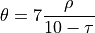
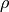

deltametrics.plan.compute_shoreline_angles¶
-
deltametrics.plan.compute_shoreline_angles(mask, param2=False)¶ Compute shoreline angle.
Computes some stuff according to:

where  is something,
 is another.
is another.- Parameters
mask (
LandMask) – LandMask with shoreline to compute along.param2 (float, optional) – Something else? It’s assumed to be false.
- Returns
vol_conc – Volumetric concentration.
- Return type
float
Examples
>>> dm.plan.compute_shoreline_angles(True, True) 0.54